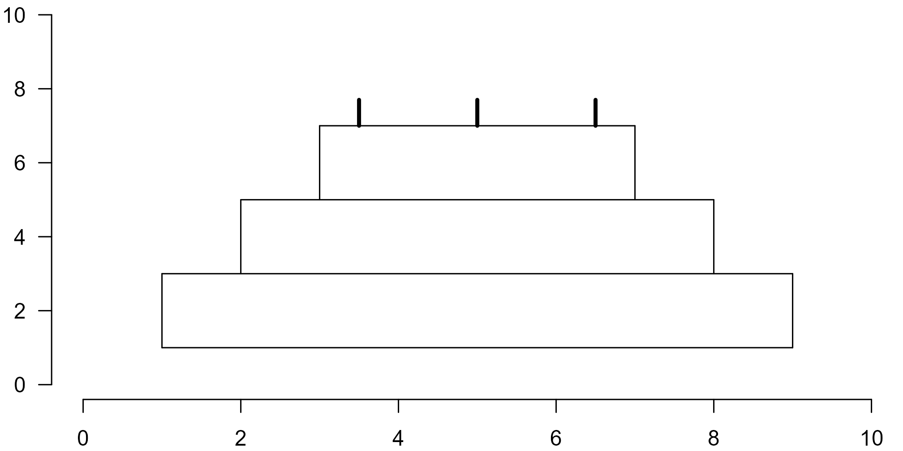

Day 2 Base Graphics
Producing figures using the built-in functions in R.
Total video length: 9 min.
Exercise length: 30–60 min.
An easy way to see how R works is by making plots.
2.1 Exercise (easy)
Today is almost certainly someone’s birthday. Let’s make them a cake!
Below is an example of a simple drawing in base R:
plot(NA, xlim = c(0, 10), ylim = c(0, 10), xlab = "", ylab = "", las = 1, bty = "n")
# Level 1
## Horizontal lines
lines(c(1, 9), c(1, 1))
lines(c(1, 9), c(3, 3))
## Vertical lines
lines(c(1, 1), c(1, 3))
lines(c(9, 9), c(1, 3))
# Level 2
## Horizontal line
lines(c(2, 8), c(5, 5))
## Vertical lines
lines(c(2, 2), c(3, 5))
lines(c(8, 8), c(3, 5))
# Level 3
## Horizontal lines
lines(c(3, 7), c(7, 7))
## Vertical lines
lines(c(3, 3), c(5, 7))
lines(c(7, 7), c(5, 7))
# Candles
k <- 3 # number of candles
x <- seq(3.5, 6.5, length.out = k) # position of the candles
h <- 0.7 # height of the candles
segments(x0 = x, x1 = x, y0 = rep(7, k), y1 = rep(7 + h, k), lwd = 3)
- Create a new R markdown file and copy the script to a new R chunk.
- Run the entire chunk using the green play button on the top right of the chunk. This will generate the figure.
- To see which line does what, run each line from top to bottom by clicking anywhere in the first line of code and pressing CTRL+Enter (Windows) or Command+Enter (MacOS). If this does not work, check the following:
- Do you have inline output disabled? Inline output may look convenient, but it usually causes more problems than it solves.
- Did you run the code in order?1
- Now that you have seen what each line does, change the script to render 5 candles instead of 3.
- Can you change the code to add a layer to the cake? (You may have to make the other layers smaller, or move the candles up.)
2.2 Exercise (medium)
Below is a video on how to read help files as a starting point for this part:
Alternatively, look for explanations online. This might feel like cheating, but getting good at searching how to do things in R is actually a valuable skill.
- Using
polygon, color your layered cake with at least three different colors. You can view the help file by typing?polygonin the console and pressing enter. - Now that everything is in place, let’s add the title “Happy Birthday” and hide the axes. It is up to you to find out how, using whatever resource you want.
2.3 Exercise (hard)
Now let’s add sprinkling to the cake. We could tell R exactly where to draw the sprinkling, but nobody sprinkles like that. So let’s make it a bit more realistic:
- Use the function
runifto randomly draw \(x\)-positions for the candles from a uniform distribution. Look up how to use the function by entering?runifin the console, or by searching online. - Every time you run the script, a new set of random coordinates will be chosen for your sprinkling. To make your cake reproducible, set a seed with the
set.seedfunction. You can search online, or in the help files how this function works, and where you should place it in your script. - If you have time left, personalize your cake with base R functions however you see fit!
2.4 Exercise (swirl)
Done drawing your cake? Want a bit more explanation of how base graphics actually work? Complete the swirl R Programming course, chapter 15.
The function
linesadds a line to an existing plot. This is only possible if you runplotfirst, so run the code in order, from top to bottom.↩︎